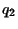

Next: About this document ...
Selected Solutions
for
Chapter 25 (Hwk 4)
of
Fundamentals of Physics, 6/E
by Halliday, Resnick, and Walker
James B. Whitenton
Southern Polytechnic State University
- 3
- When charge moves through a potential difference ,
its potential energy changes by
. In this case,
.
- We equate the final kinetic energy of the automobile to the energy released
by the lightning, denoted by
.
- We equate the energy required to melt mass
of ice to the energy released by the lightning:
, where
is the heat of fusion for ice. Thus,
- 5
- The electric field produced by an infinite sheet of charge has magnitude
, where is the surface charge density. The field
is normal to the sheet and is uniform. Place the origin of a coordinate system at the
sheet and take the axis to be parallel to the field and positive in the direction
of the field. Then the electric potential is
where is the potential at the sheet. The equipotential surfaces are surfaces of
constant ; that is, they are planes that are parallel to the plane of charge. If two
surfaces are separated by then their potentials differ in magnitude by
. Thus,
- 10
-
- Since
,
- 15
- First, we observe that cannot be equal to zero for . In fact
is always negative for . Now we consider the two remaining regions on
the axis: and . For the separation between and a
point on the axis whose coordinate is is given by ; while the
corresponding separation for  is . We set
to obtain . Similarly, for we have and .
Let
and solve: .
- 20
- The net electric potential at point is the sum of those due to the six charges:
- 25
- All the charge is the same distance from , so the
electric potential at is
where the zero was taken to be at
infinity.
- All the charge is the same distance from . That
distance is
, so the electric potential at is
- 30
- The magnitude of the electric field is given by
At any point in the region between the plates, points away from the positively
charged plate, directly towards the negatively charged one.
- 37
- We choose the zero of electric potential to be at infinity. The initial electric
potential energy of the system before the particles are brought together
is therefore zero. After the system is set up the final potential energy is
Thus the amount of work required to set up the system is given by
.
- 51 (Optional)
- If the electric potential is zero at infinity, then the potential at the
surface of the sphere is given by
, where is the charge
on the sphere and is its radius. Thus
Next: About this document ...
Jason Pinkney
2003-10-02